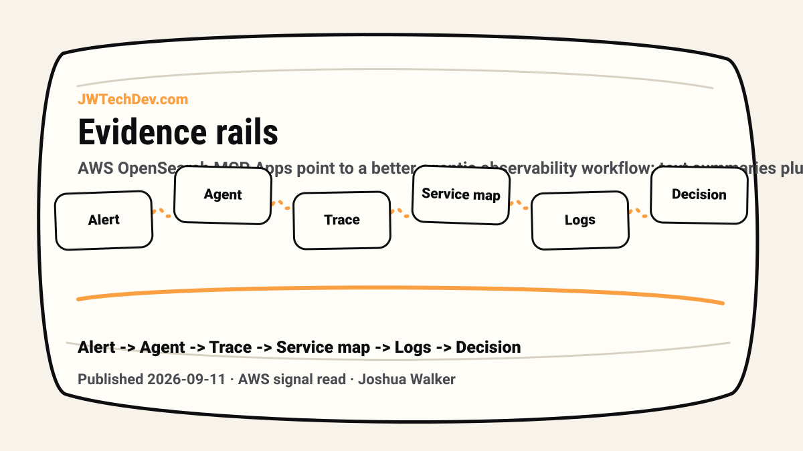

Observability agents need evidence rails, not just summaries
AWS OpenSearch MCP Apps point to a better agentic observability workflow: text summaries plus deterministic charts, trace waterfalls, service topology, and log views inside the assistant surface.

Quick answer
Observability agents should not only summarize incidents. They should return evidence the human can inspect: traces, charts, service maps, log patterns, and the exact context behind the recommendation.
The useful signal
AWS’s OpenSearch MCP Apps post focuses on a real workflow bottleneck: observability agents can query alerts, logs, and traces quickly, but humans still lose time verifying the answer across other tabs.
The interesting part is the dual response pattern. The agent can return a text summary and an interactive visualization in the same workflow, such as a trace waterfall, service topology, log pattern, or chart.
Why summaries are not enough
An incident summary without evidence creates a trust problem. The agent might be right, but the engineer still has to leave the assistant, open observability tools, re-run queries, inspect dashboards, and rebuild confidence manually.
That means the agent saved query time but did not remove the verification burden. In production work, verification is not extra. Verification is the work.
What evidence rails should show
A good evidence rail should show the source of the claim. If the agent says checkout errors spiked, show the chart. If the agent says one service is the likely failure point, show the trace path. If it says one dependency is noisy, show the topology.
The goal is not to make the interface flashy. The goal is to make the agent’s reasoning auditable by putting the proof next to the recommendation.
How this changes workbench design
This is a useful design signal for AI workbenches. The interface should not be only chat. It should show workflow state, consent state, tool calls, traces, evals, cost, owner, and evidence.
For incident response, that might mean a timeline. For agent release assurance, it might mean an eval panel. For data workflows, it might mean source snippets and permissions. The pattern is the same: do not ask humans to trust invisible work.
JWT read
This is why I keep saying AI agents need infrastructure, not just prompts. The agent can help reason, but infrastructure has to make the work observable.
The more serious the workflow, the more the assistant surface needs proof rails. Otherwise the human becomes a tab-switching verification machine while the agent gets credit for being fast.
Sources checked
Want the starter kit?
Grab the free JWTechDev.com starter kit if you want a practical way to connect AWS, AI workflows, and approval gates.
Get resources